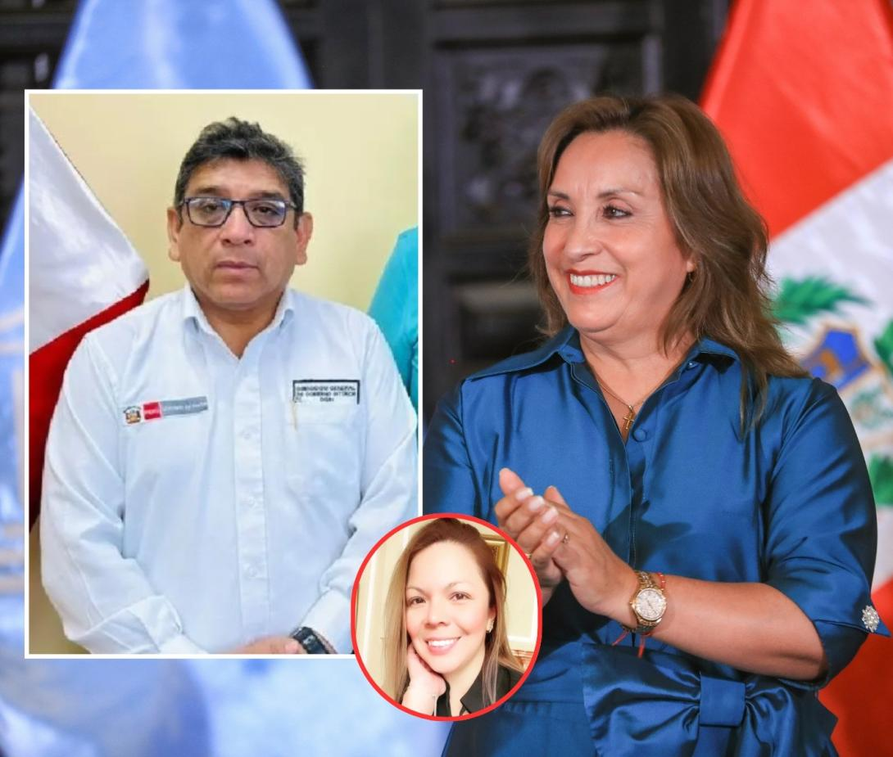

POLÍTICA

Funcionarias ayudaron a 'waiky' favorito de Dina
Su testimonio es transversal a todos los casos donde se investigan a la presidenta, Dina Boluarte. Desde sus cirugías estéticas a la nariz hasta, por ejemplo, el caso “Waykis en la Sombra”, que también investiga Ordaya.

Carlos Álvarez: “El Perú está secuestrado por criminales”
Exige mano dura, es pragmático y defiende el servicio militar. Critica el rol de jueces y fiscales, y la corrupción de parte de la Policía.
Menos de 45 partidos quedarían habilitados para las elecciones del 2026
El próximo 12 de abril se cierra el primer hito electoral del 2025, pues se definirán a los partidos políticos que quedarán habilitados para los comicios del 2026. Hasta la fecha, existen 41 agrupaciones con el membrete legal, y otras tres se encuentran en la recta final para determinar si logran meterse a la contienda del próximo año.